Hello!
Aspiring cybersecurity student. Highly motivated & determined self-starter.
My name is Robyn. 26 years old. Born in Nebraska, raised in Illinois and then later Tennessee. I moved over to Ontario for a little while but came back to the states to pursue a career in cybersecurity!
Initially, I had placed all of my focus on creative endeavors; specifically digital art. Overtime, I realized that art was more of a hobby than something I wanted to pursue as a career. My interest shifted to technology after experimenting with Linux. My first Linux distro was Linux Mint but I swapped to using Pop!_OS after discovering some computer incompatibility issues.
I've always had an interest in tinkering with various types of technology. My grandfather was something of a handyman and had his own workshop in the basement of his old house. I thought he was a superhero for fixing the things that I would accidentally break. He was the person who initially piqued my interest in fixing things. What further pushed that interest along were my devices running into a plethora of issues. So I quickly learned to troubleshoot issues on my own.
I have been in online spaces since I was first permitted to use a computer. This has allowed me to develop a deep understanding of digital privacy. Seeing the real-world consequences of data exposure firsthand served as a vital teaching moment. These observations have shaped my approach to technology, providing me the skills necessary to prioritize information security in everything I manage.
Currently, I am focused on two primary milestones: pursuing a Bachelor's degree in Cybersecurity and obtaining my CompTIA A+ certification. Following that, I intend to obtain my Network+ and Security+ certifications.
This website was coded entirely by me as a way to document my learning. If you're curious to see what I'm up to, you can click the blog section at the top of my site.

